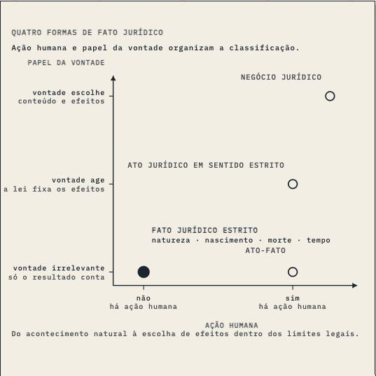
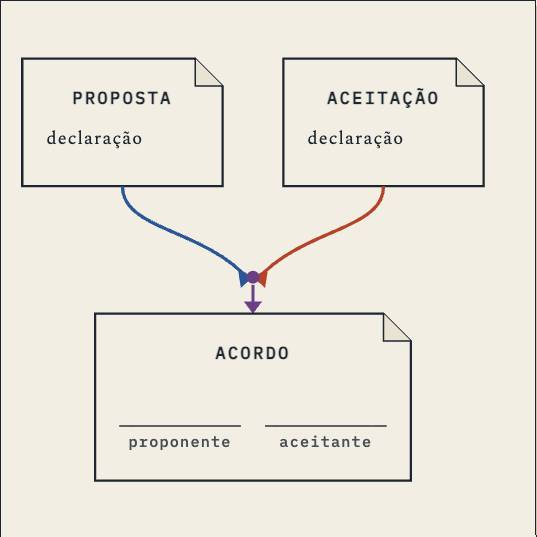
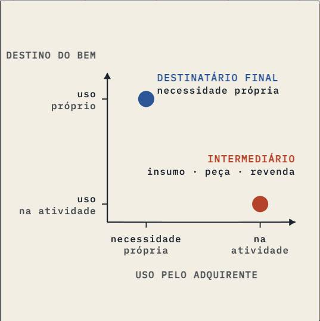

Teoria Geral dos Contratos · aula-01
Conceito de contrato
9,466 words, more than two sittings · 6 chapters · 11 figures, 11 saying what they do · 26 quoted sources · no quiz
built on1.2
on30/09
byCodex
generation1 Everglades
commits47
how it's built
- 1O acordo como negócio jurídico1,011 w
- 2Da forma à força do consentimento1,922 w
- 3A operação que faz circular riqueza1,914 w
- 4O acordo dentro da ordem jurídica942 w
- 5A relação protegida pelo CDC2,427 w
- 6A empresa como destinatária final1,249 w
its figures



what it quotes
- 26×source
prepared for it · 3 chapters
- primaryBASE-PEREIRA-CAIO-MARIO-III · PDF 1–41
- primaryBASE-VENOSA · PDF 20–27
- supportingBASE-VENOSA · PDF 70–77
the course, as I read it
Rebuilt end-to-end on the 4.3 Lesson Machine from 1.4M words of real books, articles, and cases (10/10 lessons 16/16 PASS; unified 'o vínculo' visual redesign in flight).
its checks
negated inference 0.0 / 0.5
gap talk 0.0 / 0.1
contrast tail 0.0 / 0.5
staged reveal 11.0 / 8.0
its life
- 28/11Batch 1 gate fixes: A02/A03/A05-garantias label/width polish, A04 invisible hit rect, front sync
- 27/11Contratos Aula 01 ch5 art. 6 instrument + atraso redrawn; Aula 08 three-ways transfer instrument, consent timeline redrawn, CC blocks grouped (duplica
- 27/11Contratos Aula 01 in the course hand (o vínculo): rope hero, boxless chapter figures; curso.css chapter titles no longer squeezed to 18ch
- 26/11Contratos Aula 01 r11: Sonnet review-and-fix (proof-sheet ch5, cavalheiros plate ch3, paired quotes)
- 26/11Contratos overhaul: Codex NOVIS pass on Aulas 01/08/09; Sonnet passes on 02/03; offline build
- 26/11CASA-5 .docket sign + dictionary entry 49; Aula 01 case runs as dockets
- 26/11Base: Codex's staged Contratos cohesion work (37 paths, Aulas 01-06 gated 15/15)
- 25/11Contratos visual masterpiece: fluid desktop canvas, drafting-table front, and architectural instruments for Aulas 01, 02, and 07 (#458)
nextone sitting · opening bet · instrument figures · lesson plan (my note of 14/10: deepen from compendium)